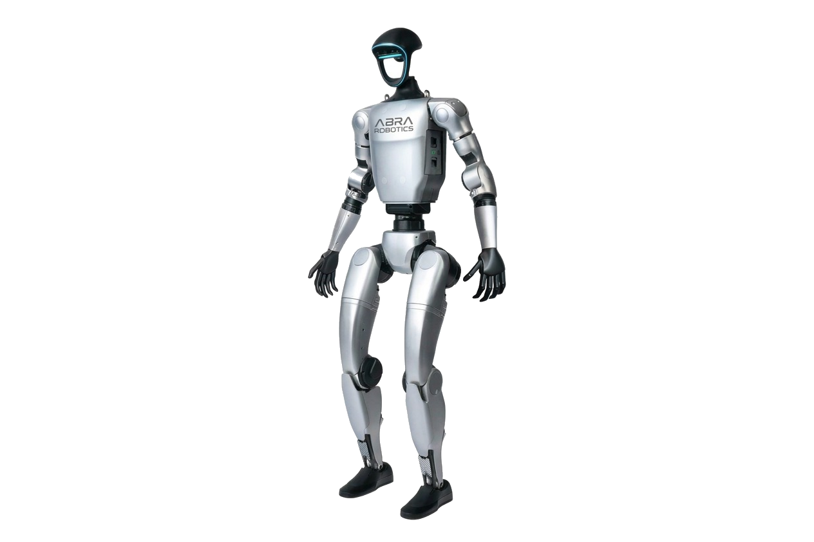

Unitree in Italia: guida completa distributore, modelli e prezzi (2026)
Hub definitivo per comprare Unitree in Italia: catalogo 101+ SKU, listino pubblico, gamma G1/H2/R1/Go2/AS2 e novità in arrivo (Go2 X, G1-D, H2-D).

Unitree G1: guida completa accensione, rete e varianti EDU
U1–U10, telecomando R3, calibrazione, SSH 192.168.123.164, debug mode — documentazione tradotta Abra.

Programmare il G1: rete, SDK2 e ROS2
Subnet 192.168.123.x, unitree_sdk2, primi test low-level — setup che usiamo con i lab clienti.

Umanoidi vs cobot e AMR: quando ha senso cosa
Non tutto va fatto con un bipede. Quando restare su Fairino/AMR e quando valutare G1 o H2.

Quale umanoide Unitree scegliere nel 2026
G1, R1, H2, G1-D a confronto con prezzi listino Abra e albero decisionale semplice.

Finanziare un robot in Italia: 4.0, 5.0 e bandi
Crediti d'imposta, bandi regionali e leasing — cosa verifichiamo gratis prima del preventivo.
Go2 vs Go2 Pro: quale quadrupede ti serve
LiDAR, velocità, SDK: Air per demo, Pro per autonomia, EDU per lab.

Quadrupede per ispezione: AS2, A2, B2 o Go2
IP, payload sensori e integrazioni custom che montiamo in Abra.

PoC umanoide in azienda: le 5 fasi Abra
Discovery, lab, pilot on-site e report go/no-go — 8–14 settimane tipiche.

ROS2 su Unitree: da zero al primo topic
Stack Humble, DDS, simulazione e deploy sicuro su modelli EDU.